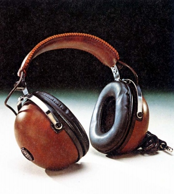
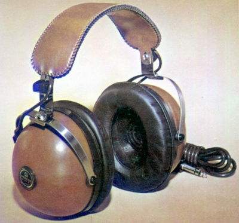
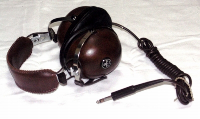

SE-25


■価格 3,500円■型式 密閉ダイナミック型■振動板 70�oコーン型■インピーダンス ■再生周波数帯域 20-20,000Hz■許容入力 500mW■感度■コード 2.5ｍキャブタイヤーコード■重量 395g（コード含まず）■発売 1971年頃■販売終了 1975年頃■備考 価格は1971年頃のもの 1974年以降は4,000円

写真は豊永尚輝氏所有機
パイオニアのインデックスへ